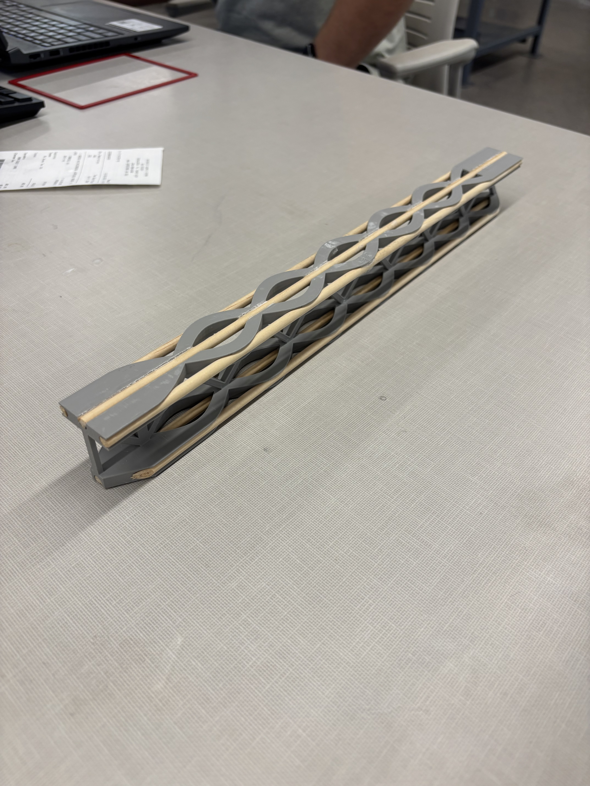

Project Overview
This project focused on the design and fabrication of a hybrid cantilever beam using a PLA–balsa composite. The goal was to achieve a lightweight structure that could support a 5 lb load with less than 0.25 in deflection. By leveraging finite element analysis (FEA) and structural optimization, we sought to maximize the beam’s strength‑to‑weight ratio while meeting strict deflection constraints. Materials were chosen for their complementary properties: PLA provides rigidity and ease of 3D printing, while balsa wood offers excellent strength‑to‑weight characteristics.
Design Process
The design began with a conventional rectangular beam model to establish baseline performance. FEA simulations were then conducted to evaluate stress distribution and deflection under loading. Based on these results, we introduced a sinusoidal truss‑lattice geometry into the beam interior. Lattice structures are known for their ability to reduce mass while enhancing mechanical properties【412534442248131†L187-L206】. The varying cross‑section of the lattice beam results in a non‑prismatic structure with a tailored moment of inertia, which improves flexural stiffness and load transfer【412534442248131†L199-L206】.
Iterative FEA and parameter sweeps were used to refine the lattice amplitude and frequency to maximize stiffness while minimizing mass. The final design featured a repeating sinusoidal pattern that increased the beam’s strength‑to‑weight ratio to 21.7, outperforming the baseline beam and earning top marks in the class. The beam was subsequently fabricated using fused deposition modeling for the PLA components and precision‑cut balsa wood inserts. A custom test rig was used to apply the 5 lb load and verify deflection and structural integrity.
Lattice Structures and Additive Manufacturing
Lattice structures are increasingly applied in engineering systems because they reduce mass and enhance mechanical properties【412534442248131†L187-L206】. In the context of cantilever beams, lattice geometries allow for the design of lightweight, non‑prismatic beams that can be manufactured using additive manufacturing. Studies have shown that surface‑based lattice designs such as Schwarz‑D perform better than beam‑based lattice structures due to their stretch‑dominated topology, which improves flexural stiffness and modulus【412534442248131†L203-L207】. Finite element analysis (FEA) validation indicates that the distribution of stresses in lattice beams matches experimental results closely, providing confidence in simulation‑driven design processes【412534442248131†L207-L213】.
In this project, the sinusoidal lattice pattern took inspiration from such research by utilizing a periodic unit cell to create a beam that behaves like a truss. The design illustrates how additive manufacturing enables the fabrication of complex, optimized geometries that are impractical with traditional manufacturing methods.
Results & Achievements
- Achieved a strength‑to‑weight ratio of 21.7, the highest in the class.
- Met deflection constraint of 0.25 in under a 5 lb load.
- Validated FEA predictions through physical testing, with results aligning within 5 % of simulated values.
- Developed a repeatable design methodology combining FEA, material selection, and experimental testing.
Skills Demonstrated
- Finite element analysis (ANSYS and SolidWorks Simulation).
- CAD modeling and lattice design for additive manufacturing.
- Composite material selection and fabrication techniques.
- Testing and validation using custom rigs and instrumentation.
- Technical communication through reports and presentations.